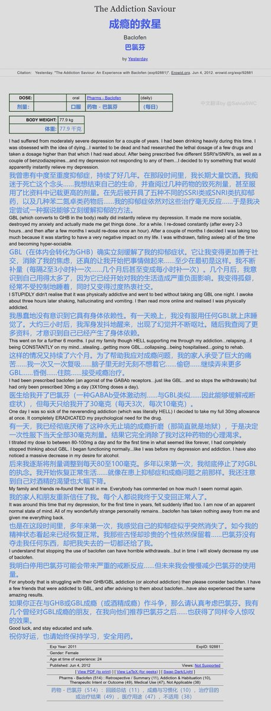

药物报告day42——巴氯芬戒瘾和抗抑郁的报告
作者因抑郁症的常规疗法无效，使用GBL(GHB的前药)缓解抑郁。于是长期大量服用GBL成瘾，而戒断反应导致严重不适。于是，转向服用巴氯芬，戒断反应被很地缓解，甚至抗抑郁效果也比GHB更好。
哇，大家有试过这种方法嘛🥺看上去很好欸

作者因抑郁症的常规疗法无效，使用GBL(GHB的前药)缓解抑郁。于是长期大量服用GBL成瘾，而戒断反应导致严重不适。于是，转向服用巴氯芬，戒断反应被很地缓解，甚至抗抑郁效果也比GHB更好。
哇，大家有试过这种方法嘛🥺看上去很好欸

药物报告day41——抽吸相思皮的体验
作者提前联用了褪黑素，使用水烟烟具，抽吸了混有MAOI的含DMT的相思皮、，剧烈致幻🤤
看了这篇报告，窝感觉相比死藤水，抽混有MAOI的相思皮有不少优势呢🥺比如，制备相思皮的方法简单；不容易被晶哥以制毒罪名抓住；药效剧烈但短暂，安全系数高。大家觉得怎么样🤔 https://t.co/bEdBduQItX https://t.co/j7NTJ4heTz
作者提前联用了褪黑素，使用水烟烟具，抽吸了混有MAOI的含DMT的相思皮、，剧烈致幻🤤
看了这篇报告，窝感觉相比死藤水，抽混有MAOI的相思皮有不少优势呢🥺比如，制备相思皮的方法简单；不容易被晶哥以制毒罪名抓住；药效剧烈但短暂，安全系数高。大家觉得怎么样🤔 https://t.co/bEdBduQItX https://t.co/j7NTJ4heTz